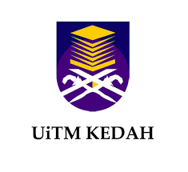

"Education is the key to unlocking the world, a passport to freedom."-Oprah Winfrey
| Institution | Address | Education |
|---|---|---|
| 1. Sekolah Kebangsaan Batu Sembilan (SKBS)
| Sekolah Kebangsaan Batu Sembilan, Batu 9 , Jalan Cheras Selangor, Malaysia |
|
| 2. Sekolah Rendah Agama Batu 10
| Sekolah Rendah Agama Batu Sepuluh, Jalan Hulu Langat, Cheras, 43200, Selangor |
|
| 3. Sekolah Agama Menengah Batu 10 (SAMTEN)
| Sekolah Agama Menengah Hulu Langat Batu 10, Jalan Cheras, Selangor, Malaysia |
|
| 4. Universiti Teknologi Mara Kedah (UiTM)
 | 08400 Merbok, Kedah |
|